Situación de calle e intervención social en una comuna de Santiago
01 · Portada
Personas en situación de calle e intervención social en una comuna de Santiago.
Etnografía · Investigación social aplicada · Diseño de políticas
Este estudio apuntó a comprender los factores personales, relacionales y territoriales que influyen en la permanencia en calle y en la decisión de aceptar o rechazar los apoyos municipales.
El trabajo de campo se desarrolló entre agosto y octubre de 2024, combinando trabajo dentro del centro de reinserción y salidas a terreno con equipos municipales. Los informes finales fueron entregados en diciembre del mismo año.

02 · Contexto del proyecto
El municipio buscaba entender por qué muchas personas en situación de calle rechazan los programas de apoyo, incluso cuando estos ofrecen alojamiento, acompañamiento psicosocial y opciones de reinserción.
Para ello se desarrolló una investigación cualitativa con enfoque etnográfico, incorporando múltiples técnicas de acercamiento y observación:
- Observación participante dentro del Centro de Reinserción Municipal.
- Acompañamiento en operativos de calle con equipos municipales.
- Entrevistas abiertas y conversaciones informales en territorio.
- Registro de situaciones cotidianas y dinámicas grupales en espacios públicos.
- Triangulación entre relatos de usuarios, funcionarios y observaciones directas.
- Análisis mediante codificación abierta y selectiva (Teoría Fundamentada).
El objetivo fue obtener una comprensión situada de las motivaciones, significados y dinámicas que influyen en la decisión de rechazar o aceptar dispositivos de apoyo.
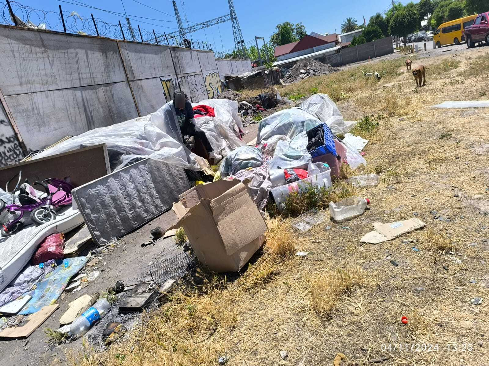
03 · Personas y contextos
Las personas en situación de calle mantienen redes, rutinas e identidades vinculadas al territorio.
Sus decisiones están influenciadas por trayectorias de exclusión, vínculos afectivos frágiles, consumo problemático y trabajos informales.
Comprender estos contextos es clave para diseñar intervenciones más útiles y realistas.
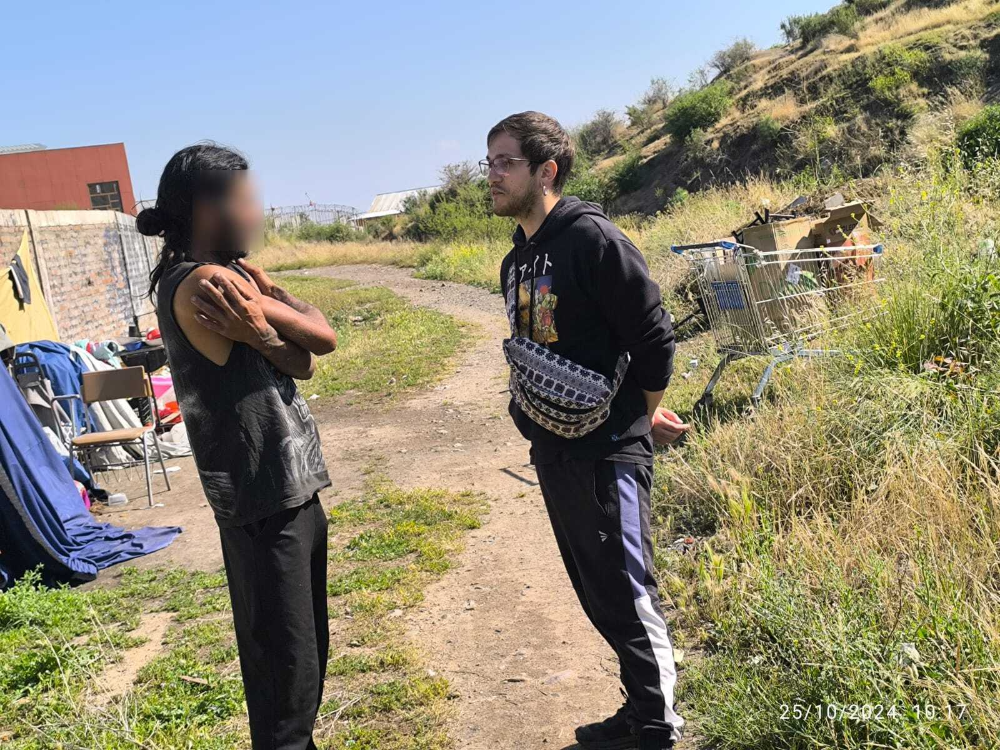
04 · La autonomía como valor fundamental y estrategia de supervivencia
Las trayectorias están marcadas por quiebres familiares, separaciones, pérdidas laborales y conflictos afectivos. Estos quiebres pueden ser causa de la caída en calle, o efectuarse como consecuencia de no querer seguir con la vida que se llevaba.
Los vínculos familiares conflictivos, el fallecimiento de familiares, el sentimiento de rechazo y el consumo problemático de sustancias configuran una experiencia de rechazo respecto a depender de otros. La vida en la calle desarrolla un fuerte sentido de autosuficiencia: los programas de ayuda que implican internación se perciben como una amenaza a esa autonomía.
Evidencia: los participantes describían con orgullo sus estrategias de subsistencia (“hay plata en la basura”) y veían el ingreso a un centro como una regresión a un estado de dependencia. La libertad de tomar sus propias decisiones, incluso en condiciones extremas, era un pilar de su identidad.
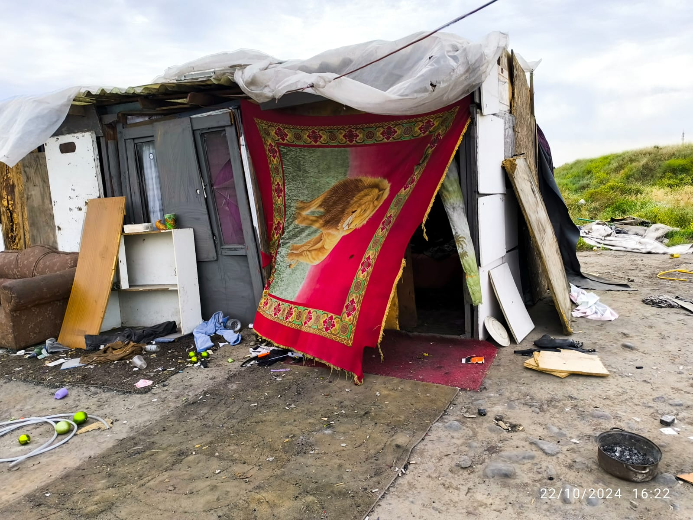
05 · Resignificación del espacio: la calle como hogar
La calle se resignifica como un lugar donde se puede vivir bajo reglas propias, sin horarios ni supervisión.
Los espacios que habitan (rucos, plazas) son resignificados como hogares funcionales y llenos de significado, no meros refugios improvisados.
Evidencia: los usuarios mostraban sus rucos organizados: “acá está el living y por ahí la cocina; este es nuestro hogar”. La destrucción de estos espacios por parte del municipio se vive como una violencia institucional que destruye su historia material y emocional.
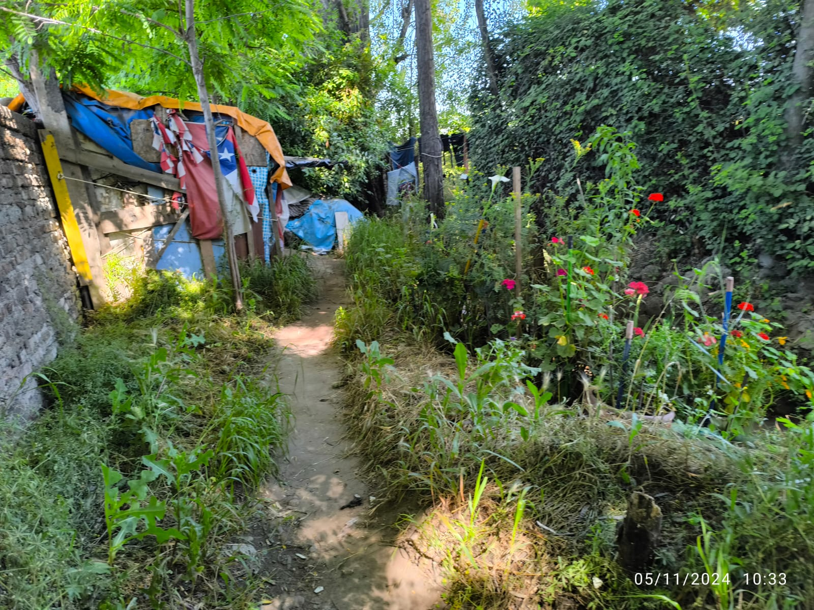
06 · Economías informales y agencia activa
Los usuarios no son sujetos pasivos: están integrados en sistemas económicos informales activos (recolección, venta en ferias, oficios).
Evidencia: relatos de generación de ingresos diarios (~$10.000) destinados a su sustento e, incluso, al de sus familias. El ingreso a un centro interrumpe estas redes de ingreso, creando una barrera económica tangible.
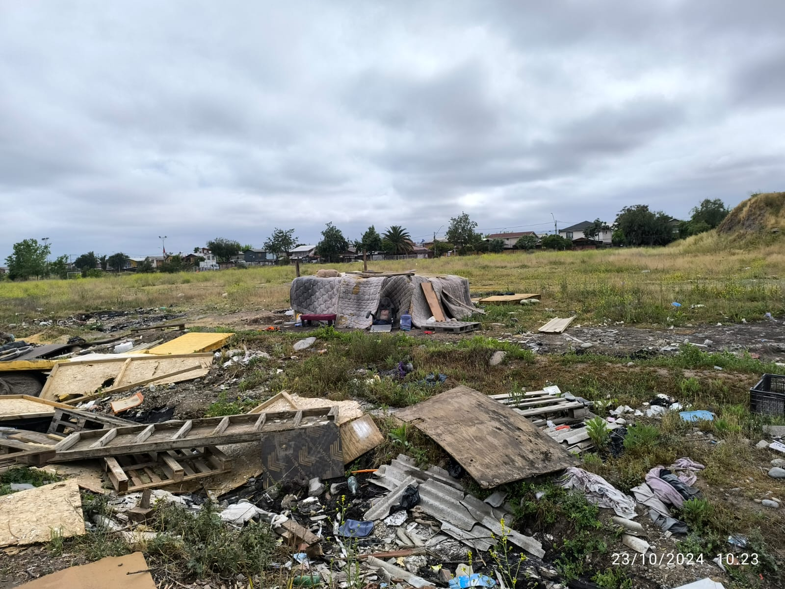
07 · Relaciones sociales y mascotas como red de soporte crítica
Se construyen comunidades horizontales y lazos de compañerismo que reemplazan las redes familiares perdidas. Estas relaciones son un soporte emocional y práctico fundamental. Los animales también cumplen un rol importante en el día a día: proveerles comida y convivir con ellos.
Evidencia: parejas y grupos que se autodenominan compañeros y trabajan en conjunto. Las intervenciones que separan estas redes (internaciones individuales que separan parejas, amigos y animales) son fuertemente rechazadas.
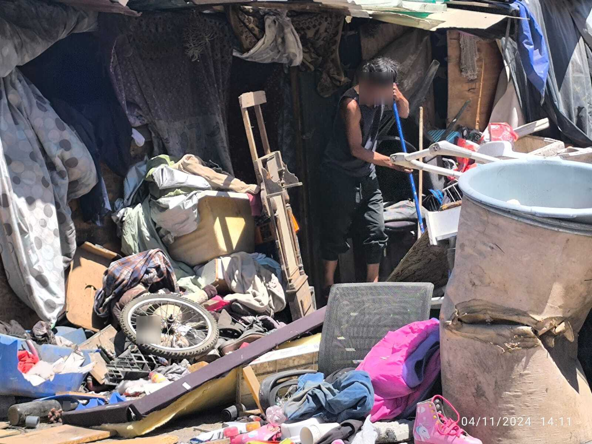
08 · Género y vulnerabilidad
La socialización masculina hegemónica (autosuficiencia, contención emocional) dificulta la expresión de vulnerabilidad y la búsqueda de ayuda formal.
Las mujeres en situación de calle enfrentan una vulnerabilidad específica y extrema, caracterizada por la amenaza constante de agresiones sexuales y relaciones de dependencia coercitiva con hombres que aprovechan su situación para obtener favores a cambio de protección o sustento.
Evidencia: hombres que relataban “aguantar y resistir” como mandato, canalizando el dolor emocional hacia el consumo de sustancias, lo que perpetúa el ciclo de exclusión. El fenómeno está altamente masculinizado (90% de los casos atendidos). En el caso femenino se relata acoso sexual callejero y, también, la importancia de la autonomía y de saber defenderse cuando alguien intenta aprovecharse.
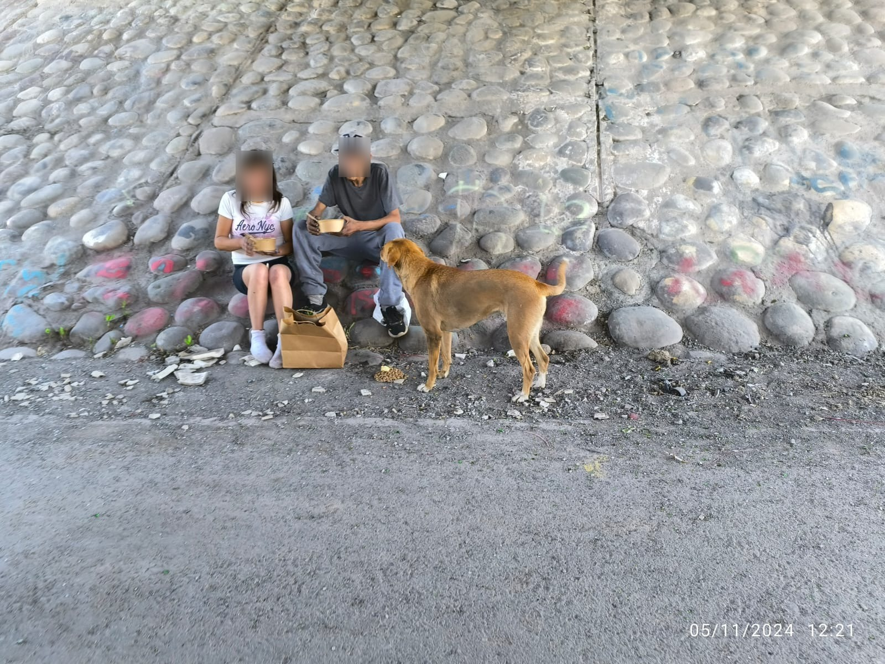
09 · Tensiones en el Centro de Reinserción
Los procesos de reinserción son valorados, pero también descritos como lentos, normativos y emocionalmente demandantes. Algunos de los problemas que reportan los usuarios:
- Convivencia con personas en diferentes etapas: conflictos al interior del recinto, robos y peleas.
- Alta exigencia emocional y riesgo de recaídas.
- Los usuarios agradecen el apoyo, pero piden mayor flexibilidad.
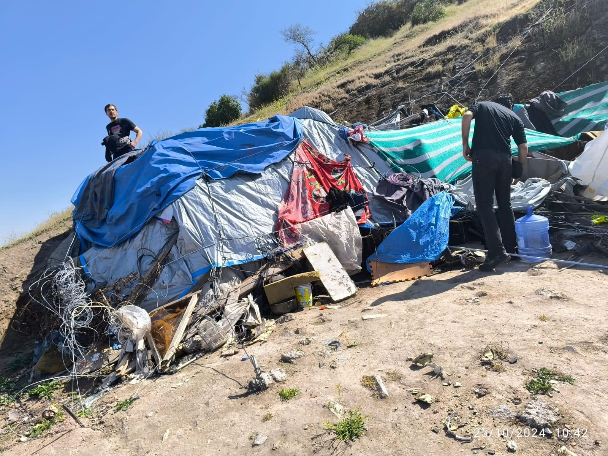
10 · Oportunidades de diseño
- Intervenciones más flexibles ante trayectorias distintas, incluyendo alternativas habitacionales de transición y oportunidades laborales flexibles.
- Modelos progresivos que no obliguen a abandonar el espacio propio de inmediato.
- Mejor comunicación entre equipos municipales (por ejemplo, entre seguridad ciudadana y programas de ayuda).
- Protocolos unificados de contacto y acompañamiento.
- Incorporar estrategias de Housing First, especialmente para parejas o personas con vínculos significativos difíciles de separar.
- Co-crear soluciones mediante metodologías participativas como la Investigación Acción Participativa (IAP) y enfoques centrados en la experiencia aplicados al trabajo social.
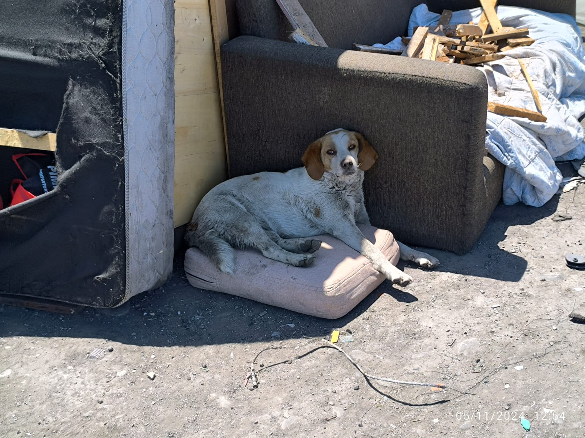
11 · Impacto potencial
Una intervención más flexible y centrada en la persona puede aumentar la adherencia y reducir la desvinculación.
Incorporar la autonomía como eje de diseño mejora la experiencia de acompañamiento.
La incorporación de modelos como Housing First y metodologías participativas puede mejorar la adherencia y reducir el rechazo, al sentirse la intervención más alineada con las realidades territoriales, afectivas y laborales de las personas.
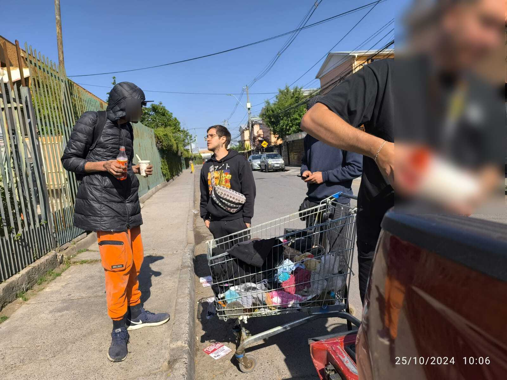
12 · Reflexiones finales
Diseñar con y no para transforma la relación entre instituciones y personas en situación de calle.
Reconocer la agencia, la autonomía y las expectativas personales permite intervenciones más humanas y sostenibles.
La flexibilidad, la coherencia institucional y el diseño centrado en la experiencia de las personas emergen como claves para avanzar hacia intervenciones más humanas y sostenibles.
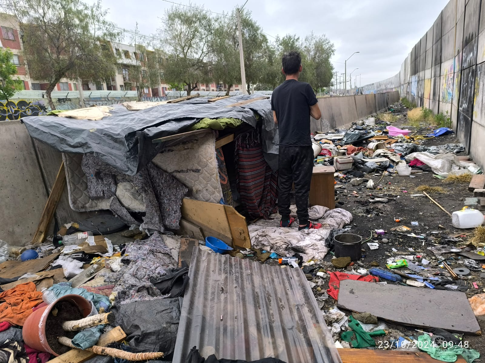
13 · Cierre del estudio
Este estudio aporta una mirada situada y empática para mejorar la intervención municipal, buscando avanzar hacia políticas más adaptativas, basadas en la autonomía, los vínculos significativos y enfoques contemporáneos como Housing First y la participación comunitaria.
Gracias a todas las personas que compartieron sus experiencias en terreno, a los trabajadores municipales que hicieron posible el trabajo de campo —tanto dentro como fuera de los centros— y a mi par de trabajo Daniel Morales, con quien realizamos de manera conjunta este proyecto.
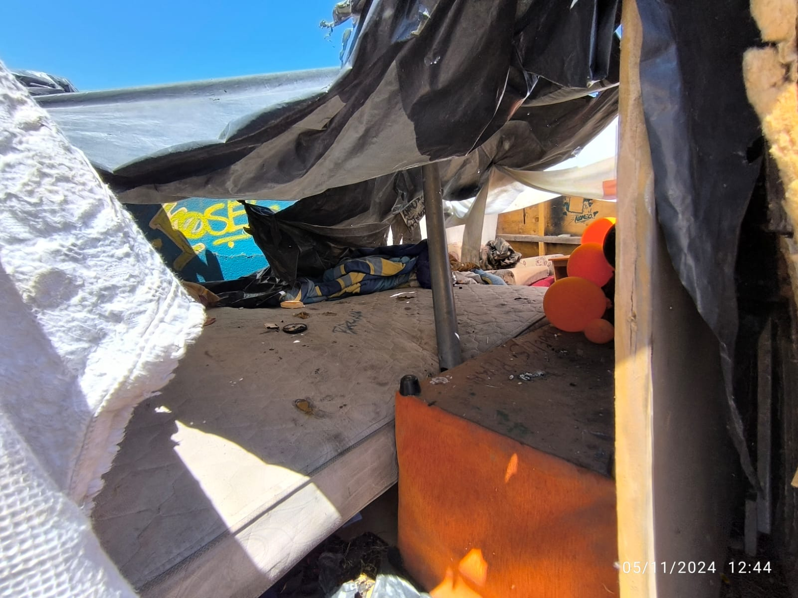
1 / 13
Tip: también puedes navegar con las flechas ← → del teclado